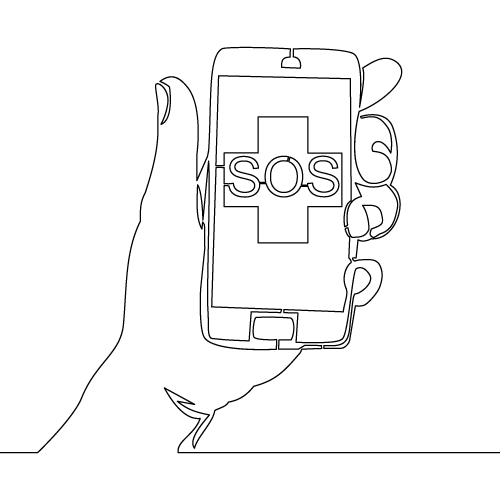
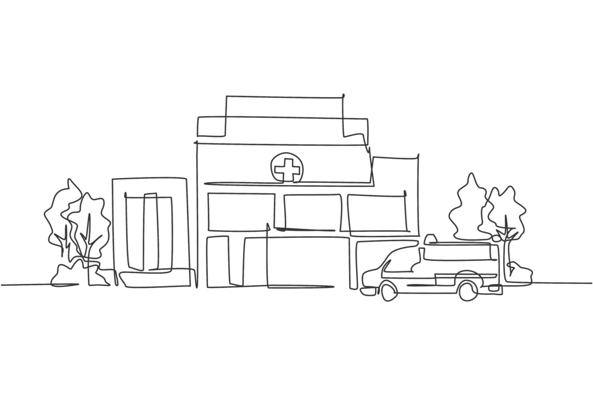
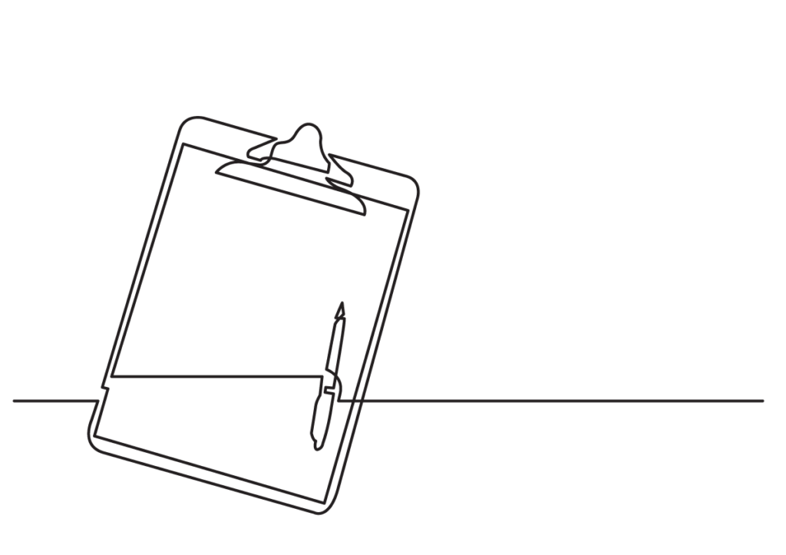
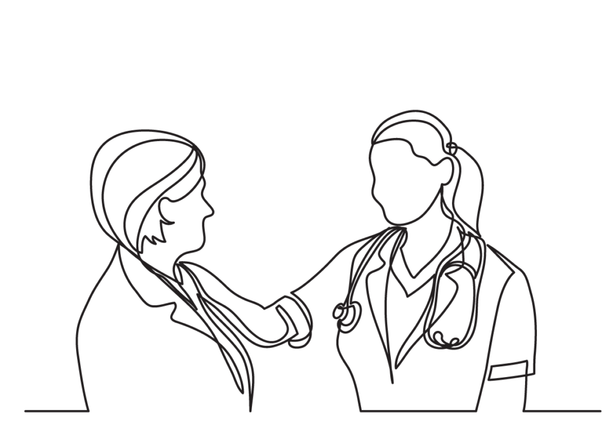

Today’s fast-paced world has thrown up new lifestyle and medical challenges worldwide. All age groups, at each stage of life, need good health as a key pillar for a happy life. Zahra Hasanaat Health Initiative promotes good health and wellness through education and access to high quality and affordable health care. The health initiative also aims to motivate people to take charge of their own health with a focus on preventive health and healthy living and to provide access to Primary Health care in India through resources such as medical vans and health clinics.
What we do
Emergency Medical Grants & Specialized Consultations
Provide access to primary healthcare in India through its resources and networks. Community physicians and mental health providers are available to assist individuals in need for health services, medical providers, and specialists for timely assistance. Read stories etc link link.


100,000+ patients | Medical Clinics & Partnerships
Zahra Hasanaat is committed to improving socio-economic and health indicators of the community. For many years mobile medical vans provided subsidized primary care in areas that had no access to health facilities. Today, in partnership with Doctors for You, we run health clinics and camps in Gowandi, Bhiwandi and Bihar. Read more and see photos link link.
Taheri Health Insurance Program
Provide guidance on need and availability of various insurance schemes. Provides up to 50% subsidy for those who are unable to afford premiums for coverage up to INR 5 Lacs. Link to camp link link


Medical Education and Prevention
Motivate people to take charge of their own health with a focus on preventive health and healthy living. Organise webinars and grassroots camps that facilitate direct interaction between a panel of medical specialists and online audience. Addressed topics include terminal illness, chronic diseases, mental health, childcare and vaccinations, among others. Webinars include link, link. Camps include link, link.
Objectives
Health Education & Awareness
Health education develops the awareness, skills, and positive attitudes towards health – it teaches physical, mental, emotional, and social health and drives preventive health, that avoids illness, and reduces risk patterns.
- Webinars
- Health camps
- Counseling
Health Insurance & Financial Aid
Medical emergencies can drain lower-income families of financial, emotional, and physical resources, leaving them helpless and despondent. Many fall into extreme debt by taking expensive loans to fund treatment.
- Health insurance enrollment and claim support
- Emergency medical grants
- Subsidy on insurance premiums
Health Access for Grassroots
Interventions for accessible and affordable medical facilities in Mankhurd West, Mumbai, for low income area residents.
- Health centres
- Medical vans and supplies
- Medical and paramedical support
Apply ↗
Emergency relief funds are available for families who are incurring extreme financial difficulty due to medical problems. For longer term medical aid the Taheri Health Insurance is a subsidized insurance program.
Contribute ↗
The organization is committed to good governance, transparency, fair management, responsible use of funds, and accountability.
Get involved ↗
Upliftment, not charity, is beneficial for both the givers and receivers as it instills a sense of connectedness in the community and gratitude for what we have.